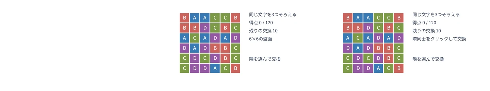
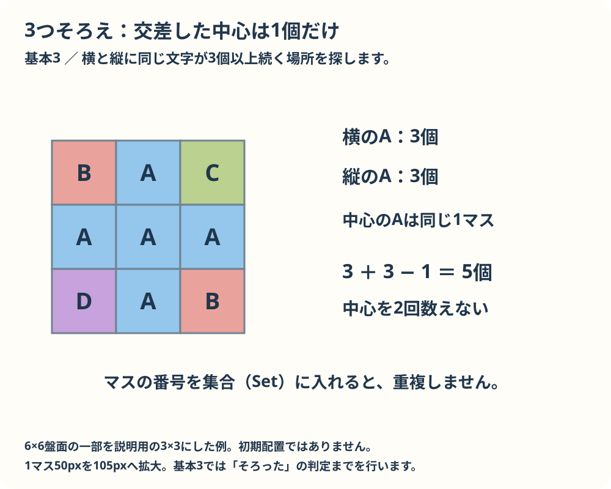
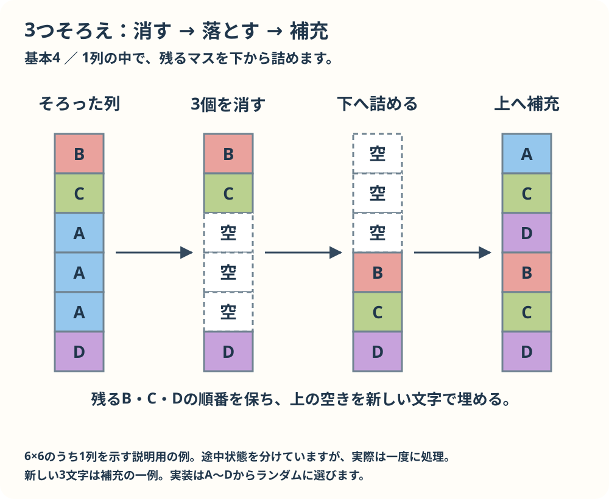

3つそろえるパズルを作る
始める前に
ZIPを展開してできたフォルダーでindex.htmlを開きます。ZIPにはひな型の3ファイルが入っています。
WindowsでZIPを展開する（動画）
各段階の変更を上から順に加え、保存したら index.html を開くか再読み込みします。
ステップ 1：盤面を作る
このステップの見本を図で見る
cells[0].slice(0,4) = [1,0,0,2]
6×6の盤面の一部
letters=["A","B","C","D"]
1→B、0→A、2→C
ゲーム画面とコードの前後を見る

このステップの見本
この行を足す前 変わったコードの一例（script.js）
const v = this.cells[y][x]; ctx.fillStyle = palette[v]; ctx.fillRect(80 + x * 50, 65 + y * 50, 46, 46);
見本で確かめること
6×6にA〜Dの文字が表示されます。
目標
盤面と交換の仕組みを作ります。
作業を順に進め、確認欄で保存して動作を確かめます。
書く場所と置き換えるコード
色と文字を用意する
先頭の ctx の行の後に追加します。
目印
const ctx = canvas.getContext("2d");追加するコード
const palette = ["#397ab4", "#ca635c", "#7d9a47", "#9357a2"];
const letters = ["A", "B", "C", "D"];palette は4種類の色、letters は対応するA〜Dの文字です。配列の番号0〜3で選びます。
盤面とゲームの骨組みを作る
letters の行の後に追加します。
目印
const letters = ["A", "B", "C", "D"];追加するコード
class Board {
}
class Game {
}
let game;Board は盤面、Game は得点や選択状態をまとめます。game にゲームの実体を覚えます。
6行6列の盤面を作る
class Board { のすぐ下に追加します。
目印
class Board {追加するコード
constructor() {
this.cells = [[1,0,0,2,2,1],[1,1,3,2,1,2],[0,2,0,3,0,3],
[3,0,3,1,1,2],[2,3,2,3,1,2],[2,3,3,0,2,1]];
}constructor() は new Board() で盤面を作るときに呼ばれ、this はその盤面自身を指します。cells は行ごとの配列です。各数字0〜3が色と文字の番号に対応し、cells[y][x] で縦y・横xのマスを取り出せます。
2つのマスを交換する
Board の constructor の後に追加します。
目印
constructor() {
this.cells = [[1,0,0,2,2,1],[1,1,3,2,1,2],[0,2,0,3,0,3],
[3,0,3,1,1,2],[2,3,2,3,1,2],[2,3,3,0,2,1]];
}追加するコード
swap(a, b) { const old = this.cells[a.y][a.x]; this.cells[a.y][a.x] = this.cells[b.y][b.x]; this.cells[b.y][b.x] = old; }一方の値を old に一時保存し、もう一方の値を入れてから、保存した値を戻します。a と b は交換するマスの座標です。
盤面のマスを描く
Board の swap() の後に追加します。
目印
swap(a, b) { const old = this.cells[a.y][a.x]; this.cells[a.y][a.x] = this.cells[b.y][b.x]; this.cells[b.y][b.x] = old; }追加するコード
draw() {
ctx.font = "24px sans-serif";
for (let y = 0; y < 6; y++) for (let x = 0; x < 6; x++) {
const v = this.cells[y][x]; ctx.fillStyle = palette[v]; ctx.fillRect(80 + x * 50, 65 + y * 50, 46, 46);
ctx.fillStyle = "#ffffff"; ctx.fillText(letters[v], 96 + x * 50, 96 + y * 50);
}
}縦と横を0〜5で繰り返します。マスの番号 v から色と文字を選び、横80・縦65を起点に50ずつずらして幅・高さ46で描きます。
得点と手数の初期値を決める
class Game { のすぐ下に追加します。
目印
class Game {追加するコード
constructor() {
this.board = new Board(); this.selected = null; this.score = 0; this.moves = 10; this.state = "playing"; this.message = "隣を選んで交換";
}新しい盤面を作り、選択なし、得点0、交換できる回数10、状態はプレイ中にします。message は画面の案内です。
ゲームを作って始める
start() から update() までの次の範囲を置き換えます。
置き換える範囲
function start() {
}
function update() {
}置き換えるコード
function start() {
game = new Game();
}
function update() {
}new Game() で盤面と初期値を作ります。update() はこの段階では空です。
盤面と選択枠を表示する
draw() で画面を消す行の後に追加します。
目印
ctx.clearRect(0, 0, canvas.width, canvas.height);追加するコード
game.board.draw();
if (game.selected) { ctx.strokeStyle = "#f8dc8b"; ctx.lineWidth = 4; ctx.strokeRect(80 + game.selected.x * 50, 65 + game.selected.y * 50, 46, 46); }
ctx.fillStyle = "#26334a"; ctx.font = "22px sans-serif";
ctx.fillText("同じ文字を3つそろえる", 420, 80);まず盤面を描き、選択中のマスがあれば同じ位置に枠を描きます。strokeRect は幅・高さ46の枠です。
得点と残り手数を表示する
draw() のタイトルから次の範囲を置き換えます。
置き換える範囲
ctx.fillText("同じ文字を3つそろえる", 420, 80);
}
function gameLoop() {置き換えるコード
ctx.fillText("同じ文字を3つそろえる", 420, 80);
ctx.fillText("得点 " + game.score + " / 120", 420, 120);
ctx.fillText("残りの交換 " + game.moves, 420, 160);
ctx.fillText("6×6の盤面", 420, 200);
ctx.fillText(game.message, 420, 300);
}
function gameLoop() {得点・残りの交換回数・案内を描きます。末尾の gameLoop() の行は残します。
保存後の確認
保存してゲーム画面を更新する（動画）
index.html を再読み込みします。6×6にA〜Dの文字が表示されます。 この段階の見本を開く
小さな練習
色や表示を変えて試します。 練習後はコードを元に戻してください。
ステップ 2：隣を交換する
このステップの見本を図で見る
|1-0| + |0-0| = 1
隣なので交換できる
old=A; 左=B; 右=old
2つの値が入れ替わる
ゲーム画面とコードの前後を見る
このステップの見本
この行を足す前 変わったコードの一例（script.js）
this.board.swap(previous, point); this.selected = null;
見本で確かめること
隣同士をクリックすると交換されます。
目標
盤面と交換の仕組みを作ります。
作業を順に進め、確認欄で保存して動作を確かめます。
書く場所と置き換えるコード
クリックを扱う骨組みを作る
Game の constructor の後に追加します。
目印
this.board = new Board(); this.selected = null; this.score = 0; this.moves = 10; this.state = "playing"; this.message = "隣を選んで交換";
}追加するコード
click(x, y) {
}click(x, y) はクリックされた列と行を受け取ります。続けて中の処理を書きます。
盤面外を除き、最初のマスを選ぶ
click(x, y) { の下に追加します。
目印
click(x, y) {追加するコード
if (this.state !== "playing" || x < 0 || x >= 6 || y < 0 || y >= 6) return;
const point = {x, y};
if (!this.selected) { this.selected = point; return; }プレイ中でない場合と、列・行が0〜5の外の場合は return で終えます。最初のクリックでは座標を selected に覚えます。
隣かどうかを調べて交換する
最初のマスを選ぶ条件の後に追加します。
目印
if (!this.selected) { this.selected = point; return; }追加するコード
const previous = this.selected;
if (Math.abs(previous.x - x) + Math.abs(previous.y - y) !== 1) { this.selected = point; return; }
this.board.swap(previous, point); this.selected = null;横と縦の差の絶対値の合計が1なら上下左右の隣です。隣でなければ新しいマスを選び直し、隣なら交換して選択を解除します。
クリックの方法を表示する
draw() の「6×6の盤面」の行を置き換えます。
置き換える範囲
ctx.fillText("6×6の盤面", 420, 200);置き換えるコード
ctx.fillText("隣同士をクリックして交換", 420, 200);画面にクリックの操作方法を表示します。
クリックとRキーを受け取る
draw() の終わりから gameLoop() の先頭までを置き換えます。
置き換える範囲
}
function gameLoop() {置き換えるコード
}
canvas.addEventListener("click", event => {
});
window.addEventListener("keydown", event => {
});
function gameLoop() {Canvasのクリックとキーボードを受け取る場所を用意します。gameLoop() の行は残し、それぞれの処理は続けて追加します。
クリック位置を盤面の番号に変える
クリックの処理を開く行の後に追加します。
目印
canvas.addEventListener("click", event => {追加するコード
const rect = canvas.getBoundingClientRect();
const x = Math.floor(((event.clientX - rect.left) * canvas.width / rect.width - 80) / 50);
const y = Math.floor(((event.clientY - rect.top) * canvas.height / rect.height - 65) / 50);
game.click(x, y);表示上のCanvas左上を引き、実際の幅と表示幅の比を掛けてCanvasの座標に変えます。盤面の左上80・65を引いて50で割り、切り捨てた列と行を game.click() に渡します。
Rで最初から始める
キー処理を開く行の後に追加します。
目印
window.addEventListener("keydown", event => {追加するコード
if (event.repeat) return;
const key = event.key.toLowerCase();
if (key === "r") { start(); return; }押しっぱなしの繰り返しを除き、Rなら start() で新しい盤面を作ります。
保存後の確認
隣同士をクリックすると交換されます。 この段階の見本を開く
小さな練習
色や表示を変えて試します。 練習後はコードを元に戻してください。
ステップ 3：3つ以上を判定する
このステップの見本を図で見る
A === A && A === B → false
ほかにも一致がなければ交換を戻す
A === A && A === A → true
この3マスを消去対象にする
ゲーム画面とコードの前後を見る
このステップの見本
この行を足す前 変わったコードの一例（script.js）
if (x <= 3 && v === this.cells[y][x + 1] && v === this.cells[y][x + 2]) for (let i = 0; i < 3; i++) found.add(y * 6 + x + i);
見本で確かめること
そろわない交換は元に戻ります。
目標
盤面と交換の仕組みを作ります。
作業を順に進め、確認欄で保存して動作を確かめます。
書く場所と置き換えるコード
そろったマスを集める関数を作る
Board の swap() の後に追加します。
目印
swap(a, b) { const old = this.cells[a.y][a.x]; this.cells[a.y][a.x] = this.cells[b.y][b.x]; this.cells[b.y][b.x] = old; }追加するコード
matches() {
const found = new Set();
return found;
}found はそろったマスの番号を重複なく覚える Set です。これから盤面を調べる処理を追加します。
全マスの値を調べる
matches() の found を作る行の後に追加します。
目印
const found = new Set();追加するコード
for (let y = 0; y < 6; y++) for (let x = 0; x < 6; x++) {
const v = this.cells[y][x];
}縦と横を0〜5で繰り返し、今のマスの値を v に入れます。
横に3つそろったか調べる
matches() のマスの値を取り出す行と繰り返しを閉じる行を置き換えます。
置き換える範囲
const v = this.cells[y][x];
}置き換えるコード
const v = this.cells[y][x];
if (x <= 3 && v === this.cells[y][x + 1] && v === this.cells[y][x + 2]) for (let i = 0; i < 3; i++) found.add(y * 6 + x + i);
}x <= 3 は右に2マスある範囲です。3つの値が同じなら、行番号に6を掛けた番号へ3マス分を加えます。
縦に3つそろったか調べる
横の判定の行の後に追加します。
目印
if (x <= 3 && v === this.cells[y][x + 1] && v === this.cells[y][x + 2]) for (let i = 0; i < 3; i++) found.add(y * 6 + x + i);追加するコード
if (y <= 3 && v === this.cells[y + 1][x] && v === this.cells[y + 2][x]) for (let i = 0; i < 3; i++) found.add((y + i) * 6 + x);y <= 3 は下に2マスある範囲です。縦の3マスも found に加えます。横と縦が交わっても Set なので同じマスを二重に数えません。

横に3個、縦にも3個そろっていても、中心は同じ1マスです。3＋3から重なった1個を引くと5個になります。Setにマスの番号を入れると、同じ場所を2回数えずにすみます。
説明用3×3抜粋で初期配置ではない。matchesのSetと行列走査を照合。この段階には消去・加点処理がないので個数のみ。
そろわない交換を戻す
click() で盤面を交換する行の後に追加します。
目印
this.board.swap(previous, point); this.selected = null;追加するコード
const found = this.board.matches();
if (!found.size) { this.board.swap(previous, point); this.message = "そろわないので戻した"; }
else { this.message = "そろった！"; }交換後に matches() で調べ、found.size が0ならもう一度交換して元に戻します。そろった場合は案内を変えます。
保存後の確認
そろわない交換は元に戻ります。 この段階の見本を開く
小さな練習
色や表示を変えて試します。 練習後はコードを元に戻してください。
ステップ 4：消去と落下
このステップの見本を図で見る
y=2,3,4 のCを消す
残る文字はA・B・D
下から kept=[D,B,A]
残る文字を下へ詰める
空き3マスに0〜3の乱数
乱数が1,0,3だった例
ゲーム画面とコードの前後を見る
このステップの見本
この行を足す前 変わったコードの一例（script.js）
if (x + dx >= 6 || y + dy >= 6) continue;
見本で確かめること
そろう交換で消えて補充されます。
目標
盤面と交換の仕組みを作ります。
作業を順に進め、確認欄で保存して動作を確かめます。
書く場所と置き換えるコード
消した後にマスを落として補う
Board の matches() を閉じる次の範囲の後に追加します。
目印
return found;
}追加するコード
refill(found) {
for (let x = 0; x < 6; x++) {
const kept = [];
for (let y = 5; y >= 0; y--) if (!found.has(y * 6 + x)) kept.push(this.cells[y][x]);
for (let y = 5; y >= 0; y--) this.cells[y][x] = kept.length ? kept.shift() : Math.floor(Math.random() * 4);
}
}列ごとに、消えないマスを下から kept に集めます。下から順に戻し、足りない上のマスは0〜3の乱数で補います。

そろったマスを消し、残るマスを下へ詰めます。残るマスの上下の順番は変えません。上にできた空きには新しい文字を入れ、もう一度そろった場所を調べます。
1列[B,C,A,A,A,D]からAAAを消す例。中間状態は説明上分割し、実装はrefill内で詰めて補充する。
次に動かせるか調べる骨組みを作る
refill() の終わりの後に追加します。
目印
for (let y = 5; y >= 0; y--) this.cells[y][x] = kept.length ? kept.shift() : Math.floor(Math.random() * 4);
}
}追加するコード
hasMove() {
for (let y = 0; y < 6; y++) for (let x = 0; x < 6; x++) for (const [dx, dy] of [[1,0],[0,1]]) {
}
return false;
}各マスについて右と下の隣を順に調べます。そろう交換が見つからなければ false を返します。
隣を仮に交換して確かめる
hasMove() の繰り返しを開く行の後に追加します。
目印
for (let y = 0; y < 6; y++) for (let x = 0; x < 6; x++) for (const [dx, dy] of [[1,0],[0,1]]) {追加するコード
if (x + dx >= 6 || y + dy >= 6) continue;
const a = {x, y}, b = {x: x + dx, y: y + dy}; this.swap(a, b);
const valid = this.matches().size > 0; this.swap(a, b);
if (valid) return true;盤面外の隣を飛ばし、2つを仮に交換して matches() で調べます。必ず元に戻し、そろう交換なら true を返します。
連鎖を処理する関数を作る
Game の constructor の後に追加します。
目印
this.board = new Board(); this.selected = null; this.score = 0; this.moves = 10; this.state = "playing"; this.message = "隣を選んで交換";
}追加するコード
resolve(found) {
let chain = 1;
}resolve(found) はそろったマスを消して補う処理です。chain は連鎖の回数で、1から始めます。
そろう間は消して補う
resolve() の連鎖回数を作る行の後に追加します。
目印
let chain = 1;追加するコード
while (found.size && chain <= 12) {
this.score += found.size * 10;
this.board.refill(found); found = this.board.matches(); chain++;
}そろったマス1つにつき10点を足し、補充後にもう一度調べます。連鎖は最大12回まで処理します。
続行できない盤面を整える
resolve() の連鎖を閉じる次の範囲の後に追加します。
目印
this.board.refill(found); found = this.board.matches(); chain++;
}追加するコード
if (found.size || !this.board.hasMove()) { this.board = new Board(); this.message = "盤面を整えました"; }12回後もそろいが残るか、次の有効な交換がなければ、新しい盤面に戻して案内を表示します。
そろったら消去を進める
click() の「そろった」場合を置き換えます。
置き換える範囲
else { this.message = "そろった！"; }置き換えるコード
else { this.message = "そろった！"; this.resolve(found); }そろったマスを resolve() に渡し、消去・落下・連鎖を処理します。
保存後の確認
そろう交換で消えて補充されます。 この段階の見本を開く
小さな練習
色や表示を変えて試します。 練習後はコードを元に戻してください。
ステップ 5：手数と勝敗
このステップの見本を図で見る
110 >= 120 は false; moves <= 0
手数切れ
120 >= 120 → clear
手数判定より先にクリア
ゲーム画面とコードの前後を見る
このステップの見本
この行を足す前 変わったコードの一例（script.js）
if (this.score >= 120) { this.state = "clear"; this.message = "クリア！ Rで再開"; }
見本で確かめること
120点を目指し、10手以内に達すればクリアです。
目標
盤面と交換の仕組みを作ります。
作業を順に進め、確認欄で保存して動作を確かめます。
書く場所と置き換えるコード
勝敗を決める
Game の resolve() の後に追加します。
目印
if (found.size || !this.board.hasMove()) { this.board = new Board(); this.message = "盤面を整えました"; }
}追加するコード
finish() {
if (this.score >= 120) { this.state = "clear"; this.message = "クリア！ Rで再開"; }
else if (this.moves <= 0) { this.state = "over"; this.message = "手数切れ。Rで再開"; }
}得点が120以上ならクリア、そうでなく手数が0以下ならゲームオーバーです。クリアを先に調べるので、最後の手で120点になればクリアです。
交換するたび手数を減らす
click() の交換と選択解除の行の後に追加します。
目印
this.board.swap(previous, point); this.selected = null;追加するコード
this.moves--;-- は1減らす書き方です。交換がそろわず元に戻った場合も1手使います。
交換後に勝敗を確認する
click() のそろった場合の処理の後に追加します。
目印
else { this.message = "そろった！"; this.resolve(found); }追加するコード
this.finish();交換後に finish() を呼び、得点と手数から勝敗を決めます。
保存後の確認
120点を目指し、10手以内に達すればクリアです。 この段階の見本を開く
小さな練習
色や表示を変えて試します。 練習後はコードを元に戻してください。